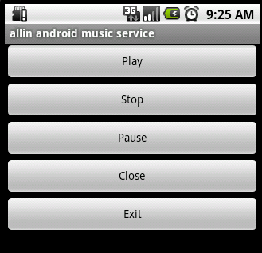
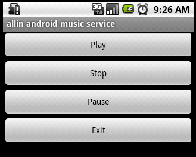

Android Service 详解简单音乐播放器
Service是android系统中的一种组件，它跟Activity的级别差不多，但是他不能自己运行，只能后台运行，并且可以和其他组件进行交互。Service的启动有两种方式：context.startService() 和 context.bindService()。
使用context.startService() 启动Service是会会经历:
context.startService() ->onCreate()- >onStart()->Service runningcontext.stopService() | ->onDestroy() ->Service stop
如果Service还没有运行，则android先调用onCreate()然后调用onStart()；如果Service已经运行，则只调用onStart()，所以一个Service的onStart方法可能会重复调用多次。
stopService的时候直接onDestroy，如果是调用者自己直接退出而没有调用stopService的话，Service会一直在后台运行。该Service的调用者再启动起来后可以通过stopService关闭Service。
所以调用startService的生命周期为：onCreate --> onStart(可多次调用) --> onDestroy
使用使用context.bindService()启动Service会经历：
context.bindService()->onCreate()->onBind()->Service runningonUnbind() -> onDestroy() ->Service stop
onBind将返回给客户端一个IBind接口实例，IBind允许客户端回调服务的方法，比如得到Service运行的状态或其他操作。这个时候把调用者（Context，例如Activity）会和Service绑定在一起，Context退出了，Srevice就会调用onUnbind->onDestroy相应退出。
所以调用bindService的生命周期为：onCreate --> onBind(只一次，不可多次绑定) --> onUnbind --> onDestory。
在Service每一次的开启关闭过程中，只有onStart可被多次调用(通过多次startService调用)，其他onCreate，onBind，onUnbind，onDestory在一个生命周期中只能被调用一次。
service可以在和多场合的应用中使用，比如播放多媒体的时候用户启动了其他Activity这个时候程序要在后台继续播放，比如检测SD卡上文件的变化，再或者在后台记录你地理信息位置的改变等等，总之服务嘛，总是藏在后头的。
下面我做了一个简单的音乐播放的应用，分别使用startService和bindService来启动本地的服务。
下面是整个应用启动界面：

先从使用startService启动Service学起
首先编写一个Activity
import android.R;import android.app.Activity;
import android.content.Intent;
import android.os.Bundle;
import android.util.Log;
import android.view.View;
import android.view.View.OnClickListener;
import android.widget.Button;
public class PlayMusic extends Activity implements OnClickListener {
private static final String TAG = "PlayMusic";
private Button playBtn;
private Button stopBtn;
private Button pauseBtn;
private Button exitBtn;
private Button closeBtn;
// ....（详见源码）
@Override
public void onClick(View v) {
int op = -1;
Intent intent = new Intent("org.allin.android.musicService");
// 广播用
// Intent intent = new Intent("org.allin.android.musicReceiver");
switch (v.getId()) {
case R.id.play:
Log.d(TAG, "onClick: playing muic");
op = 1;
break;
case R.id.stop:
Log.d(TAG, "onClick: stoping music");
op = 2;
break;
case R.id.pause:
Log.d(TAG, "onClick: pausing music");
op = 3;
break;
case R.id.close:
Log.d(TAG, "onClick: close");
this.finish();
break;
case R.id.exit:
Log.d(TAG, "onClick: exit");
op = 4;
stopService(intent);
this.finish();
break;
}
Bundle bundle = new Bundle();
bundle.putInt("op", op);
intent.putExtras(bundle);
startService(intent);
// sendBroadcast(intent);
}
}
通过重写onClick方法来实现对播放音乐的控制。这里把播放音乐的各种操作用数字的方式通过Intent传递给service。
构造一个Intent ，ntent intent = new Intent("org.allin.android.musicService");
"org.allin.android.musicService"是在AndroidManifest.xml文件中对service类的定义
<service android:enabled="true" android:name=".MusicService"><intent-filter>
<action android:name="org.allin.android.musicService" />
</intent-filter>
</service>
把操作码放在Bundle中
Bundle bundle = new Bundle();bundle.putInt("op", op);
intent.putExtras(bundle);
最后使用startService(intent);启动服务。
下面看看Service是怎么实现的。
MusicService.java
import java.io.IOException;import android.R;
import android.app.Service;
import android.content.Intent;
import android.media.MediaPlayer;
import android.os.Bundle;
import android.os.IBinder;
import android.util.Log;
public class MusicService extends Service {
private static final String TAG = "MyService";
private MediaPlayer mediaPlayer;
@Override
public IBinder onBind(Intent arg0) {
return null;
}
@Override
public void onCreate() {
Log.v(TAG, "onCreate");
if (mediaPlayer == null) {
mediaPlayer = MediaPlayer.create(this, R.raw.tmp);
mediaPlayer.setLooping(false);
}
}
@Override
public void onDestroy() {
Log.v(TAG, "onDestroy");
if (mediaPlayer != null) {
mediaPlayer.stop();
mediaPlayer.release();
}
}
@Override
public void onStart(Intent intent, int startId) {
Log.v(TAG, "onStart");
if (intent != null) {
Bundle bundle = intent.getExtras();
if (bundle != null) {
int op = bundle.getInt("op");
switch (op) {
case 1:
play();
break;
case 2:
stop();
break;
case 3:
pause();
break;
}
}
}
}
public void play() {
if (!mediaPlayer.isPlaying()) {
mediaPlayer.start();
}
}
public void pause() {
if (mediaPlayer != null && mediaPlayer.isPlaying()) {
mediaPlayer.pause();
}
}
public void stop() {
if (mediaPlayer != null) {
mediaPlayer.stop();
try {
// 在调用stop后如果需要再次通过start进行播放,需要之前调用prepare函数
mediaPlayer.prepare();
} catch (IOException ex) {
ex.printStackTrace();
}
}
}
}
服务使用了系统自带MediaPlayer进行音乐的播放控制。 当调用了startService后服务会先调用onCreate，我们在里面对MediaPlayer进行初始化。接着会调用onStart，可以看到传递给startService()的Intent对象会传递给onStart()方法，这样我们就可以得到intent里面的操作码：
IBundle bundle = intent.getExtras();int op = bundle.getInt("op");
然后更具定义好的操作码进行相应的f播放操作。启动后界面如下图：

图中的”close”和“exit”是不同的，close只是调用finish()退出当前的Activity，但是Service并没有关掉，音乐会继续播放。而exit就是调用了stopService(intent);来停止服务，Service会调用onDestroy()方法来对mediaPlayer进行停止和释放资源。
有时候如果服务只提供一些操作接口，我们也可以通过广播的g方式来启动服务。
首先要定义一个Receiver，并继承BroadcastReceiver，然后在AndroidManifest.xml中进行注册：
<receiver android:name=".MusicReceiver"><intent-filter>
<action android:name="org.allin.android.musicReceiver" />
</intent-filter>
</receiver>
Receiver的实现：
MusicReceiver.java
import android.content.BroadcastReceiver;import android.content.Context;
import android.content.Intent;
import android.os.Bundle;
import android.util.Log;
public class MusicReceiver extends BroadcastReceiver {
private static final String TAG = "MusicReceiver";
@Override
public void onReceive(Context context, Intent intent) {
Log.d(TAG, "onReceive");
Intent it = new Intent("org.androidmanual.musicService");
Bundle bundle = intent.getExtras();
it.putExtras(bundle);
if (bundle != null) {
int op = bundle.getInt("op");
if (op == 4) {
context.stopService(it);
} else {
context.startService(it);
}
}
}
}
然后对PlayMusic中的onclick方法进行些改造，把Intent指向Receiver
Intent intent = new Intent("org.allin.android.musicReceiver");intent中绑定的操作码都不变，再调用sendBroadcast(intent);把intentg广播出去。
当MusicReceiver接受到广播后根据操作码进行相应的操作。
接下来的例子就是使用bindService来启动Service
首先一样是写一个Activity
import android.R;import android.app.Activity;
import android.content.ComponentName;
import android.content.Context;
import android.content.Intent;
import android.content.ServiceConnection;
import android.os.IBinder;
import android.util.Log;
import android.view.View;
import android.view.View.OnClickListener;
import android.widget.Button;
public class PlayBindMusic extends Activity implements OnClickListener {
private static final String TAG = "PlayBindMusic";
private Button playBtn;
private Button stopBtn;
private Button pauseBtn;
private Button exitBtn;
private BindMusicService musicService;
@Override
public void onClick(View v) {
switch (v.getId()) {
case R.id.play:
Log.d(TAG, "onClick: binding srvice");
musicService.play();
break;
case R.id.stop:
Log.d(TAG, "onClick: stoping srvice");
if (musicService != null) {
musicService.stop();
}
break;
case R.id.pause:
Log.d(TAG, "onClick: pausing srvice");
if (musicService != null) {
musicService.pause();
}
break;
case R.id.exit:
Log.d(TAG, "onClick: exit");
this.finish();
break;
}
}
private void connection() {
Log.d(TAG, "connecting.....");
Intent intent = new Intent("org.allin.android.bindService");
bindService(intent, sc, Context.BIND_AUTO_CREATE);
}
private ServiceConnection sc = new ServiceConnection() {
@Override
public void onServiceDisconnected(ComponentName name) {
musicService = null;
Log.d(TAG, "in onServiceDisconnected");
}
@Override
public void onServiceConnected(ComponentName name, IBinder service) {
musicService = ((BindMusicService.MyBinder) (service)).getService();
if (musicService != null) {
musicService.play();
}
Log.d(TAG, "in onServiceConnected");
}
};
}
在这里使用了bindService(intent,sc,Context.BIND_AUTO_CREATE);来启动服务的，我们需要定义ServiceConnectionnn，并实现里面的方法，当服务绑定成功后会调用ServiceConnectionnn中的回调函数：
public void onServiceConnected(ComponentName name, IBinder service)
回调函数里面使用
musicService = ((BindMusicService.MyBinder)(service)).getService();
来获取BindMusicService服务对象，有了BindMusicService实例对象，就可以调用服务提供的各种控制音乐播放的哦功能。
下面看看BindMusicService.java的实现：
import java.io.IOException;import android.R;
import android.app.Service;
import android.content.Intent;
import android.media.MediaPlayer;
import android.os.Binder;
import android.os.IBinder;
import android.util.Log;
import android.widget.Toast;
public class BindMusicService extends Service {
private static final String TAG = "MyService";
private MediaPlayer mediaPlayer;
private final IBinder binder = new MyBinder();
public class MyBinder extends Binder {
BindMusicService getService() {
return BindMusicService.this;
}
}
@Override
public IBinder onBind(Intent intent) {
Log.d(TAG, "onBind");
play();
return binder;
}
@Override
public void onCreate() {
super.onCreate();
Log.d(TAG, "onCreate");
Toast.makeText(this, "show media player", Toast.LENGTH_SHORT).show();
}
@Override
public void onDestroy() {
super.onDestroy();
Log.d(TAG, "onDestroy");
Toast.makeText(this, "stop media player", Toast.LENGTH_SHORT);
if (mediaPlayer != null) {
mediaPlayer.stop();
mediaPlayer.release();
}
}
public void play() {
if (mediaPlayer == null) {
mediaPlayer = MediaPlayer.create(this, R.raw.tmp);
mediaPlayer.setLooping(false);
}
if (!mediaPlayer.isPlaying()) {
mediaPlayer.start();
}
}
public void pause() {
if (mediaPlayer != null && mediaPlayer.isPlaying()) {
mediaPlayer.pause();
}
}
public void stop() {
if (mediaPlayer != null) {
mediaPlayer.stop();
try {
// 在调用stop后如果需要再次通过start进行播放,需要之前调用prepare函数
mediaPlayer.prepare();
} catch (IOException ex) {
ex.printStackTrace();
}
}
}
}
我们看到Service中有个返回IBinder对象的onBind方法，这个方法会在Service被绑定到其他程序上时被调用，而这个IBinder对象和之前看到的onServiceConnected方法中传入的那个IBinder是同一个东西。应用和Service间就依靠这个IBinder对象进行通信。
启动后的界面如下图：
